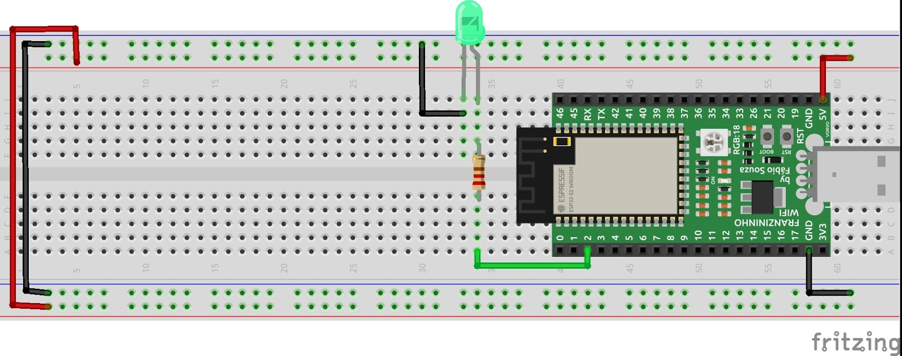
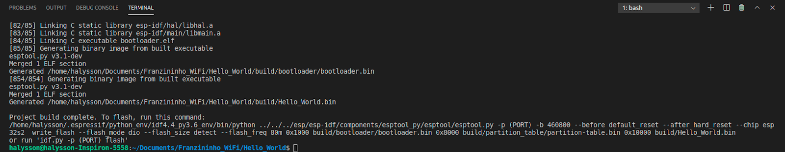
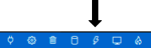
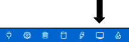
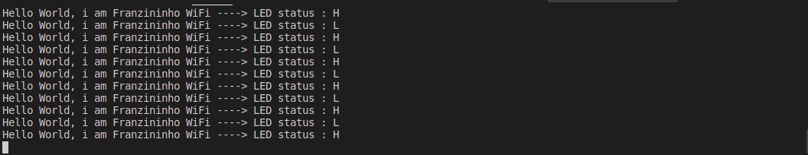
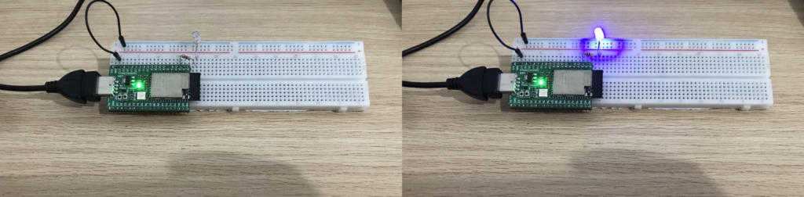

Introdução
O artigo proposto dará início a uma série de projetos utilizando o framework oficial da Espressif, o IDF. O objetivo deste artigo é apresentar um exemplo de projeto que sirva como base para aqueles que estão dando seus primeiros passos na família de microcontroladores ESP32.
Como é de praxe na programação sempre que iniciamos uma nova linguagem ou quando aprendemos sobre um novo processador o primeiro projeto a ser criado é o “Olá Mundo“, caso contrário teremos um eterno azar, então o que acha de começarmos a estudar e apresentar nosso projeto ao Mundo?
Ao final desse exemplo você saberá como é a estrutura básica de um programa no ESP-IDF e estará pronto para os próximos passos.
Recursos Necessários
Para esse exemplo você precisará dos seguintes recursos:
-
Placa Franzininho WiFi;
-
Protoboard;
-
LED;
-
Resistor 220R ou 150R;
-
Computador com ESP-IDF instalado e configurado(link)
Desenvolvimento
Nesse projeto foi utilizado a Franzininho WiFi, uma placa de desenvolvimento baseada no módulo ESP 32-S2 (Wroom ou Wrover), o qual faz parte de uma iniciativa open hardware para ensinar sobre programação e eletrônica aliando habilidades na soldagem de componentes eletrônicos.
Como mencionado, vamos fazer o Olá Mundo (Hello, World!), um programa base que tem como objetivo apresentar os recursos primários do processador em estudo. Nesse primeiro projeto vamos explorar as GPIOs, configuradas como saída digital, conectada a um LED externo para ligar e desligar numa frequência de 1 Hertz (1 segundo) e enviar alguns dados de saída para serem mostrados no monitor do editor, para aqueles que estão migrando do Arduino já estão familiarizados com esse exemplo, o famoso “Blink”.
Esquemático
Antes de começarmos a escrever as primeiras linhas de código vamos realizar a montagem do circuito, vale ressaltar que na placa Franzininho WiFi há um LED RGB on board endereçável, contudo será utilizado um LED externo, conectado a GPIO 2 ,para o primeiro projeto, vamos nos familiarizarmos com os comandos básicos. Abaixo segue o esquemático proposto:

Código
O nosso código possui uma estrutura bem simples e não é necessário acrescentar nenhuma biblioteca. Ao criar um novo projeto no IDF já temos arquivos configurados e prontos para programação do dispositivo, desta forma digite e comente as linhas do seguinte código no arquivo main.c :
/*
Descrição: Exemplo que mostra Hello World utilizando quatro modalidade de saída de dados por meio do
terminal e interagindo com um LED externo para indicação de estado.
Autor: Halysson Junior
Data : 28/03/21
*/
// Arquivos de cabeçalho
#include <stdio.h>
#include "freertos/FreeRTOS.h"
#include "freertos/task.h"
#include "esp_system.h"
#include "driver/gpio.h"
// Definição de pino
#define LED 2
// Variável Global
char status[2] = {'L','H'}; // Caracter para indicar estado do LED H- HIGH e L - LOW
void app_main(void) // Main
{
gpio_pad_select_gpio(LED);// Mapeamento do pino LED
gpio_set_direction(LED,GPIO_MODE_OUTPUT); // Definição
printf("Exemplo - Hello World \n");// Mostra informação no terminal
//Variáveis Local
bool i = 0 ; // Varia o estado lógico do LED
for (;;) {// Loop
i= i^1; // Operação lógica XOR para alternar o estado do LED
gpio_set_level(LED,i); // Envia os níveis lógicos 1 ou 0
printf("Hello World, i am Franzininho WiFi ----> LED status : %c \n", status[i]);
vTaskDelay(1000 / portTICK_PERIOD_MS); // Rotina de Delay de 1 segundo
fflush(stdout); // Descarrega os buffers de saída de dados
}// end Loop
}// end Main
Você encontra o projeto completo na documentação da Franzininho: Hello_World
Caso ainda não tenha instalado e configurado o IDF no seu computador ou tem dúvidas sobre as ferramentas, acesse o tutorial de instalação
Compilação
Após a codificação vamos compilar o código, mas antes selecione o set target para ESP 32-S2.
idf.py set-target esp32s2
Ao final da compilação o resultado final deve ser semelhante à imagem mostrada abaixo, em caso de erros retorne os passos anteriores e revise seu código.

Agora vamos enviar o código fonte para nossa placa, no editor vamos pressionar o ícone abaixo e aguarde alguns segundos para assim dar início ao programa “Olá Mundo”.

Para vermos a saída de dados do nosso projeto clique no ícone apresentado abaixo.

Resultados
Com a finalização do projeto o leitor observou que utilizamos uma estruturação da linguagem C (main(), printf, fflush()), laços de repetição (for()) e alguns tipos de variáveis primitivas (int e char) para formar nosso código . Aliados a isso utilizamos labels nativas do IDF para definir os pinos de entrada ou saída digital (GPIO_MODE_OUTPUT ).
Abaixo segue o resultado final dos dados de saída :

Abaixo segue o nosso circuito do nosso projeto:

Portanto, a partir deste projeto é possível aplicar a lógica estruturada no código em diversos outros tipos de sensores, por exemplo : sensor de vibração, sensor infravermelho, sensor de som e outros sensores digitais comumente comercializados.
Conclusão
Nesse projeto apresentamos os conceitos básicos para aqueles que desejam dar o pontapé inicial nos estudos sobre o IDF, contudo aconselhamos aos leitores a modificar o código no intuito de revisar a linguagem C e fixar algumas funções nativas, os quais serão normalmente utilizadas em outros projetos também não limitar-se apenas aos periféricos GPIOs do microcontrolador, pois o ESP32-S2 possui diversos recursos tanto em hardware quanto em software. Desta forma o artigo servirá de acervo aos leitores para relembrar conceitos específicos e aprimorar os que já possuem.
| Autor | Halysson Junior |
|---|---|
| Data: | 13/05/2021 |